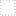

<!doctype html>
<html lang="en">
    <head>
        <meta charset="utf-8">
        <meta http-equiv="X-UA-Compatible" content="IE=edge">
        <meta name="viewport" content="initial-scale=1,user-scalable=no,maximum-scale=1,width=device-width">
        <meta name="mobile-web-app-capable" content="yes">
        <meta name="apple-mobile-web-app-capable" content="yes">
        <link rel="stylesheet" href="css/leaflet.css">
        <link rel="stylesheet" href="css/L.Control.Layers.Tree.css">
        <link rel="stylesheet" href="css/qgis2web.css">
        <link rel="stylesheet" href="css/fontawesome-all.min.css">
        <link rel="stylesheet" href="css/leaflet.photon.css">
        <style>
        html, body, #map {
            width: 100%;
            height: 100%;
            padding: 0;
            margin: 0;
        }
        </style>
        <title></title>
    </head>
    <body>
        <div id="map">
        </div>
        <script src="js/qgis2web_expressions.js"></script>
        <script src="js/leaflet.js"></script>
        <script src="js/L.Control.Layers.Tree.min.js"></script>
        <script src="js/leaflet.rotatedMarker.js"></script>
        <script src="js/leaflet.pattern.js"></script>
        <script src="js/leaflet-hash.js"></script>
        <script src="js/Autolinker.min.js"></script>
        <script src="js/rbush.min.js"></script>
        <script src="js/labelgun.min.js"></script>
        <script src="js/labels.js"></script>
        <script src="js/leaflet.photon.js"></script>
        <script src="data/Basin_13.js"></script>
        <script src="data/Subwater_14.js"></script>
        <script src="data/River_15.js"></script>
        <script>
        var map = L.map('map', {
            zoomControl:false, maxZoom:28, minZoom:1
        }).fitBounds([[5.97006583313223,-1.7384439736783723],[10.78006583313226,3.3415560263216606]]);
        var hash = new L.Hash(map);
        map.attributionControl.setPrefix('<a href="https://github.com/tomchadwin/qgis2web" target="_blank">qgis2web</a> &middot; <a href="https://leafletjs.com" title="A JS library for interactive maps">Leaflet</a> &middot; <a href="https://qgis.org">QGIS</a>');
        var autolinker = new Autolinker({truncate: {length: 30, location: 'smart'}});
        // remove popup's row if "visible-with-data"
        function removeEmptyRowsFromPopupContent(content, feature) {
         var tempDiv = document.createElement('div');
         tempDiv.innerHTML = content;
         var rows = tempDiv.querySelectorAll('tr');
         for (var i = 0; i < rows.length; i++) {
             var td = rows[i].querySelector('td.visible-with-data');
             var key = td ? td.id : '';
             if (td && td.classList.contains('visible-with-data') && feature.properties[key] == null) {
                 rows[i].parentNode.removeChild(rows[i]);
             }
         }
         return tempDiv.innerHTML;
        }
        // add class to format popup if it contains media
		function addClassToPopupIfMedia(content, popup) {
			var tempDiv = document.createElement('div');
			tempDiv.innerHTML = content;
			if (tempDiv.querySelector('td img')) {
				popup._contentNode.classList.add('media');
					// Delay to force the redraw
					setTimeout(function() {
						popup.update();
					}, 10);
			} else {
				popup._contentNode.classList.remove('media');
			}
		}
        var zoomControl = L.control.zoom({
            position: 'topleft'
        }).addTo(map);
        var bounds_group = new L.featureGroup([]);
        function setBounds() {
        }
        map.createPane('pane_Basemap_0');
        map.getPane('pane_Basemap_0').style.zIndex = 400;
        var layer_Basemap_0 = L.tileLayer('https://a.basemaps.cartocdn.com/light_all/{z}/{x}/{y}.png', {
            pane: 'pane_Basemap_0',
            opacity: 1.0,
            attribution: '<a href="https://cartodb.com/basemaps/">Map tiles by CartoDB, under CC BY 3.0. Data by OpenStreetMap, under ODbL.</a>',
            minZoom: 1,
            maxZoom: 28,
            minNativeZoom: 0,
            maxNativeZoom: 20
        });
        layer_Basemap_0;
        map.addLayer(layer_Basemap_0);
        map.createPane('pane_Satellite_1');
        map.getPane('pane_Satellite_1').style.zIndex = 401;
        var layer_Satellite_1 = L.tileLayer('https://server.arcgisonline.com/ArcGIS/rest/services/World_Imagery/MapServer/tile/{z}/{y}/{x}', {
            pane: 'pane_Satellite_1',
            opacity: 1.0,
            attribution: '',
            minZoom: 1,
            maxZoom: 28,
            minNativeZoom: 0,
            maxNativeZoom: 20
        });
        layer_Satellite_1;
        map.addLayer(layer_Satellite_1);
        map.createPane('pane_12_2');
        map.getPane('pane_12_2').style.zIndex = 402;
        var img_12_2 = 'data/12_2.png';
        var img_bounds_12_2 = [[6.25,0.25],[9.75,2.0]];
        var layer_12_2 = new L.imageOverlay(img_12_2,
                                              img_bounds_12_2,
                                              {pane: 'pane_12_2'});
        bounds_group.addLayer(layer_12_2);
        map.addLayer(layer_12_2);
        map.createPane('pane_11_3');
        map.getPane('pane_11_3').style.zIndex = 403;
        var img_11_3 = 'data/11_3.png';
        var img_bounds_11_3 = [[6.25,0.25],[9.75,2.0]];
        var layer_11_3 = new L.imageOverlay(img_11_3,
                                              img_bounds_11_3,
                                              {pane: 'pane_11_3'});
        bounds_group.addLayer(layer_11_3);
        map.addLayer(layer_11_3);
        map.createPane('pane_10_4');
        map.getPane('pane_10_4').style.zIndex = 404;
        var img_10_4 = 'data/10_4.png';
        var img_bounds_10_4 = [[6.25,0.25],[9.75,2.0]];
        var layer_10_4 = new L.imageOverlay(img_10_4,
                                              img_bounds_10_4,
                                              {pane: 'pane_10_4'});
        bounds_group.addLayer(layer_10_4);
        map.addLayer(layer_10_4);
        map.createPane('pane_9_5');
        map.getPane('pane_9_5').style.zIndex = 405;
        var img_9_5 = 'data/9_5.png';
        var img_bounds_9_5 = [[6.25,0.25],[9.75,2.0]];
        var layer_9_5 = new L.imageOverlay(img_9_5,
                                              img_bounds_9_5,
                                              {pane: 'pane_9_5'});
        bounds_group.addLayer(layer_9_5);
        map.addLayer(layer_9_5);
        map.createPane('pane_7_6');
        map.getPane('pane_7_6').style.zIndex = 406;
        var img_7_6 = 'data/7_6.png';
        var img_bounds_7_6 = [[6.25,0.25],[9.75,2.0]];
        var layer_7_6 = new L.imageOverlay(img_7_6,
                                              img_bounds_7_6,
                                              {pane: 'pane_7_6'});
        bounds_group.addLayer(layer_7_6);
        map.addLayer(layer_7_6);
        map.createPane('pane_6_7');
        map.getPane('pane_6_7').style.zIndex = 407;
        var img_6_7 = 'data/6_7.png';
        var img_bounds_6_7 = [[6.25,0.25],[9.75,2.0]];
        var layer_6_7 = new L.imageOverlay(img_6_7,
                                              img_bounds_6_7,
                                              {pane: 'pane_6_7'});
        bounds_group.addLayer(layer_6_7);
        map.addLayer(layer_6_7);
        map.createPane('pane_5_8');
        map.getPane('pane_5_8').style.zIndex = 408;
        var img_5_8 = 'data/5_8.png';
        var img_bounds_5_8 = [[6.25,0.25],[9.75,2.0]];
        var layer_5_8 = new L.imageOverlay(img_5_8,
                                              img_bounds_5_8,
                                              {pane: 'pane_5_8'});
        bounds_group.addLayer(layer_5_8);
        map.addLayer(layer_5_8);
        map.createPane('pane_4_9');
        map.getPane('pane_4_9').style.zIndex = 409;
        var img_4_9 = 'data/4_9.png';
        var img_bounds_4_9 = [[6.25,0.25],[9.75,2.0]];
        var layer_4_9 = new L.imageOverlay(img_4_9,
                                              img_bounds_4_9,
                                              {pane: 'pane_4_9'});
        bounds_group.addLayer(layer_4_9);
        map.addLayer(layer_4_9);
        map.createPane('pane_3_10');
        map.getPane('pane_3_10').style.zIndex = 410;
        var img_3_10 = 'data/3_10.png';
        var img_bounds_3_10 = [[6.25,0.25],[9.75,2.0]];
        var layer_3_10 = new L.imageOverlay(img_3_10,
                                              img_bounds_3_10,
                                              {pane: 'pane_3_10'});
        bounds_group.addLayer(layer_3_10);
        map.addLayer(layer_3_10);
        map.createPane('pane_2_11');
        map.getPane('pane_2_11').style.zIndex = 411;
        var img_2_11 = 'data/2_11.png';
        var img_bounds_2_11 = [[6.25,0.25],[9.75,2.0]];
        var layer_2_11 = new L.imageOverlay(img_2_11,
                                              img_bounds_2_11,
                                              {pane: 'pane_2_11'});
        bounds_group.addLayer(layer_2_11);
        map.addLayer(layer_2_11);
        map.createPane('pane_1_12');
        map.getPane('pane_1_12').style.zIndex = 412;
        var img_1_12 = 'data/1_12.png';
        var img_bounds_1_12 = [[6.25,0.25],[9.75,2.0]];
        var layer_1_12 = new L.imageOverlay(img_1_12,
                                              img_bounds_1_12,
                                              {pane: 'pane_1_12'});
        bounds_group.addLayer(layer_1_12);
        map.addLayer(layer_1_12);
        function pop_Basin_13(feature, layer) {
            var popupContent = '<table>\
                    <tr>\
                        <td colspan="2">' + (feature.properties['HYBAS_ID'] !== null ? autolinker.link(String(feature.properties['HYBAS_ID']).replace(/'/g, '\'').toLocaleString()) : '') + '</td>\
                    </tr>\
                    <tr>\
                        <td colspan="2">' + (feature.properties['NEXT_DOWN'] !== null ? autolinker.link(String(feature.properties['NEXT_DOWN']).replace(/'/g, '\'').toLocaleString()) : '') + '</td>\
                    </tr>\
                    <tr>\
                        <td colspan="2">' + (feature.properties['NEXT_SINK'] !== null ? autolinker.link(String(feature.properties['NEXT_SINK']).replace(/'/g, '\'').toLocaleString()) : '') + '</td>\
                    </tr>\
                    <tr>\
                        <td colspan="2">' + (feature.properties['MAIN_BAS'] !== null ? autolinker.link(String(feature.properties['MAIN_BAS']).replace(/'/g, '\'').toLocaleString()) : '') + '</td>\
                    </tr>\
                    <tr>\
                        <td colspan="2">' + (feature.properties['DIST_SINK'] !== null ? autolinker.link(String(feature.properties['DIST_SINK']).replace(/'/g, '\'').toLocaleString()) : '') + '</td>\
                    </tr>\
                    <tr>\
                        <td colspan="2">' + (feature.properties['DIST_MAIN'] !== null ? autolinker.link(String(feature.properties['DIST_MAIN']).replace(/'/g, '\'').toLocaleString()) : '') + '</td>\
                    </tr>\
                    <tr>\
                        <td colspan="2">' + (feature.properties['SUB_AREA'] !== null ? autolinker.link(String(feature.properties['SUB_AREA']).replace(/'/g, '\'').toLocaleString()) : '') + '</td>\
                    </tr>\
                    <tr>\
                        <td colspan="2">' + (feature.properties['UP_AREA'] !== null ? autolinker.link(String(feature.properties['UP_AREA']).replace(/'/g, '\'').toLocaleString()) : '') + '</td>\
                    </tr>\
                    <tr>\
                        <td colspan="2">' + (feature.properties['PFAF_ID'] !== null ? autolinker.link(String(feature.properties['PFAF_ID']).replace(/'/g, '\'').toLocaleString()) : '') + '</td>\
                    </tr>\
                    <tr>\
                        <td colspan="2">' + (feature.properties['ENDO'] !== null ? autolinker.link(String(feature.properties['ENDO']).replace(/'/g, '\'').toLocaleString()) : '') + '</td>\
                    </tr>\
                    <tr>\
                        <td colspan="2">' + (feature.properties['COAST'] !== null ? autolinker.link(String(feature.properties['COAST']).replace(/'/g, '\'').toLocaleString()) : '') + '</td>\
                    </tr>\
                    <tr>\
                        <td colspan="2">' + (feature.properties['ORDER'] !== null ? autolinker.link(String(feature.properties['ORDER']).replace(/'/g, '\'').toLocaleString()) : '') + '</td>\
                    </tr>\
                    <tr>\
                        <td colspan="2">' + (feature.properties['SORT'] !== null ? autolinker.link(String(feature.properties['SORT']).replace(/'/g, '\'').toLocaleString()) : '') + '</td>\
                    </tr>\
                </table>';
            var content = removeEmptyRowsFromPopupContent(popupContent, feature);
			layer.on('popupopen', function(e) {
				addClassToPopupIfMedia(content, e.popup);
			});
			layer.bindPopup(content, { maxHeight: 400 });
        }

        function style_Basin_13_0() {
            return {
                pane: 'pane_Basin_13',
                opacity: 1,
                color: 'rgba(109,113,106,1.0)',
                dashArray: '',
                lineCap: 'square',
                lineJoin: 'bevel',
                weight: 4.0,
                fillOpacity: 0,
                interactive: false,
            }
        }
        map.createPane('pane_Basin_13');
        map.getPane('pane_Basin_13').style.zIndex = 413;
        map.getPane('pane_Basin_13').style['mix-blend-mode'] = 'normal';
        var layer_Basin_13 = new L.geoJson(json_Basin_13, {
            attribution: '',
            interactive: false,
            dataVar: 'json_Basin_13',
            layerName: 'layer_Basin_13',
            pane: 'pane_Basin_13',
            onEachFeature: pop_Basin_13,
            style: style_Basin_13_0,
        });
        bounds_group.addLayer(layer_Basin_13);
        map.addLayer(layer_Basin_13);
        function pop_Subwater_14(feature, layer) {
            var popupContent = '<table>\
                    <tr>\
                        <td colspan="2">' + (feature.properties['HYBAS_ID'] !== null ? autolinker.link(String(feature.properties['HYBAS_ID']).replace(/'/g, '\'').toLocaleString()) : '') + '</td>\
                    </tr>\
                    <tr>\
                        <td colspan="2">' + (feature.properties['NEXT_DOWN'] !== null ? autolinker.link(String(feature.properties['NEXT_DOWN']).replace(/'/g, '\'').toLocaleString()) : '') + '</td>\
                    </tr>\
                    <tr>\
                        <td colspan="2">' + (feature.properties['NEXT_SINK'] !== null ? autolinker.link(String(feature.properties['NEXT_SINK']).replace(/'/g, '\'').toLocaleString()) : '') + '</td>\
                    </tr>\
                    <tr>\
                        <td colspan="2">' + (feature.properties['MAIN_BAS'] !== null ? autolinker.link(String(feature.properties['MAIN_BAS']).replace(/'/g, '\'').toLocaleString()) : '') + '</td>\
                    </tr>\
                    <tr>\
                        <td colspan="2">' + (feature.properties['DIST_SINK'] !== null ? autolinker.link(String(feature.properties['DIST_SINK']).replace(/'/g, '\'').toLocaleString()) : '') + '</td>\
                    </tr>\
                    <tr>\
                        <td colspan="2">' + (feature.properties['DIST_MAIN'] !== null ? autolinker.link(String(feature.properties['DIST_MAIN']).replace(/'/g, '\'').toLocaleString()) : '') + '</td>\
                    </tr>\
                    <tr>\
                        <td colspan="2">' + (feature.properties['SUB_AREA'] !== null ? autolinker.link(String(feature.properties['SUB_AREA']).replace(/'/g, '\'').toLocaleString()) : '') + '</td>\
                    </tr>\
                    <tr>\
                        <td colspan="2">' + (feature.properties['UP_AREA'] !== null ? autolinker.link(String(feature.properties['UP_AREA']).replace(/'/g, '\'').toLocaleString()) : '') + '</td>\
                    </tr>\
                    <tr>\
                        <td colspan="2">' + (feature.properties['PFAF_ID'] !== null ? autolinker.link(String(feature.properties['PFAF_ID']).replace(/'/g, '\'').toLocaleString()) : '') + '</td>\
                    </tr>\
                    <tr>\
                        <td colspan="2">' + (feature.properties['ENDO'] !== null ? autolinker.link(String(feature.properties['ENDO']).replace(/'/g, '\'').toLocaleString()) : '') + '</td>\
                    </tr>\
                    <tr>\
                        <td colspan="2">' + (feature.properties['COAST'] !== null ? autolinker.link(String(feature.properties['COAST']).replace(/'/g, '\'').toLocaleString()) : '') + '</td>\
                    </tr>\
                    <tr>\
                        <td colspan="2">' + (feature.properties['ORDER'] !== null ? autolinker.link(String(feature.properties['ORDER']).replace(/'/g, '\'').toLocaleString()) : '') + '</td>\
                    </tr>\
                    <tr>\
                        <td colspan="2">' + (feature.properties['SORT'] !== null ? autolinker.link(String(feature.properties['SORT']).replace(/'/g, '\'').toLocaleString()) : '') + '</td>\
                    </tr>\
                </table>';
            var content = removeEmptyRowsFromPopupContent(popupContent, feature);
			layer.on('popupopen', function(e) {
				addClassToPopupIfMedia(content, e.popup);
			});
			layer.bindPopup(content, { maxHeight: 400 });
        }

        function style_Subwater_14_0() {
            return {
                pane: 'pane_Subwater_14',
                opacity: 1,
                color: 'rgba(137,137,137,1.0)',
                dashArray: '1.0,2.0',
                lineCap: 'square',
                lineJoin: 'bevel',
                weight: 1.0,
                fillOpacity: 0,
                interactive: false,
            }
        }
        map.createPane('pane_Subwater_14');
        map.getPane('pane_Subwater_14').style.zIndex = 414;
        map.getPane('pane_Subwater_14').style['mix-blend-mode'] = 'normal';
        var layer_Subwater_14 = new L.geoJson(json_Subwater_14, {
            attribution: '',
            interactive: false,
            dataVar: 'json_Subwater_14',
            layerName: 'layer_Subwater_14',
            pane: 'pane_Subwater_14',
            onEachFeature: pop_Subwater_14,
            style: style_Subwater_14_0,
        });
        bounds_group.addLayer(layer_Subwater_14);
        map.addLayer(layer_Subwater_14);
        function pop_River_15(feature, layer) {
            var popupContent = '<table>\
                    <tr>\
                        <td colspan="2">' + (feature.properties['fid'] !== null ? autolinker.link(String(feature.properties['fid']).replace(/'/g, '\'').toLocaleString()) : '') + '</td>\
                    </tr>\
                    <tr>\
                        <td colspan="2">' + (feature.properties['HYRIV_ID'] !== null ? autolinker.link(String(feature.properties['HYRIV_ID']).replace(/'/g, '\'').toLocaleString()) : '') + '</td>\
                    </tr>\
                    <tr>\
                        <td colspan="2">' + (feature.properties['NEXT_DOWN'] !== null ? autolinker.link(String(feature.properties['NEXT_DOWN']).replace(/'/g, '\'').toLocaleString()) : '') + '</td>\
                    </tr>\
                    <tr>\
                        <td colspan="2">' + (feature.properties['MAIN_RIV'] !== null ? autolinker.link(String(feature.properties['MAIN_RIV']).replace(/'/g, '\'').toLocaleString()) : '') + '</td>\
                    </tr>\
                    <tr>\
                        <td colspan="2">' + (feature.properties['LENGTH_KM'] !== null ? autolinker.link(String(feature.properties['LENGTH_KM']).replace(/'/g, '\'').toLocaleString()) : '') + '</td>\
                    </tr>\
                    <tr>\
                        <td colspan="2">' + (feature.properties['DIST_DN_KM'] !== null ? autolinker.link(String(feature.properties['DIST_DN_KM']).replace(/'/g, '\'').toLocaleString()) : '') + '</td>\
                    </tr>\
                    <tr>\
                        <td colspan="2">' + (feature.properties['DIST_UP_KM'] !== null ? autolinker.link(String(feature.properties['DIST_UP_KM']).replace(/'/g, '\'').toLocaleString()) : '') + '</td>\
                    </tr>\
                    <tr>\
                        <td colspan="2">' + (feature.properties['CATCH_SKM'] !== null ? autolinker.link(String(feature.properties['CATCH_SKM']).replace(/'/g, '\'').toLocaleString()) : '') + '</td>\
                    </tr>\
                    <tr>\
                        <td colspan="2">' + (feature.properties['UPLAND_SKM'] !== null ? autolinker.link(String(feature.properties['UPLAND_SKM']).replace(/'/g, '\'').toLocaleString()) : '') + '</td>\
                    </tr>\
                    <tr>\
                        <td colspan="2">' + (feature.properties['ENDORHEIC'] !== null ? autolinker.link(String(feature.properties['ENDORHEIC']).replace(/'/g, '\'').toLocaleString()) : '') + '</td>\
                    </tr>\
                    <tr>\
                        <td colspan="2">' + (feature.properties['DIS_AV_CMS'] !== null ? autolinker.link(String(feature.properties['DIS_AV_CMS']).replace(/'/g, '\'').toLocaleString()) : '') + '</td>\
                    </tr>\
                    <tr>\
                        <td colspan="2">' + (feature.properties['ORD_STRA'] !== null ? autolinker.link(String(feature.properties['ORD_STRA']).replace(/'/g, '\'').toLocaleString()) : '') + '</td>\
                    </tr>\
                    <tr>\
                        <td colspan="2">' + (feature.properties['ORD_CLAS'] !== null ? autolinker.link(String(feature.properties['ORD_CLAS']).replace(/'/g, '\'').toLocaleString()) : '') + '</td>\
                    </tr>\
                    <tr>\
                        <td colspan="2">' + (feature.properties['ORD_FLOW'] !== null ? autolinker.link(String(feature.properties['ORD_FLOW']).replace(/'/g, '\'').toLocaleString()) : '') + '</td>\
                    </tr>\
                    <tr>\
                        <td colspan="2">' + (feature.properties['HYBAS_L12'] !== null ? autolinker.link(String(feature.properties['HYBAS_L12']).replace(/'/g, '\'').toLocaleString()) : '') + '</td>\
                    </tr>\
                </table>';
            var content = removeEmptyRowsFromPopupContent(popupContent, feature);
			layer.on('popupopen', function(e) {
				addClassToPopupIfMedia(content, e.popup);
			});
			layer.bindPopup(content, { maxHeight: 400 });
        }

        function style_River_15_0() {
            return {
                pane: 'pane_River_15',
                opacity: 1,
                color: 'rgba(72,123,182,1.0)',
                dashArray: '',
                lineCap: 'square',
                lineJoin: 'bevel',
                weight: 1.0,
                fillOpacity: 0,
                interactive: false,
            }
        }
        map.createPane('pane_River_15');
        map.getPane('pane_River_15').style.zIndex = 415;
        map.getPane('pane_River_15').style['mix-blend-mode'] = 'normal';
        var layer_River_15 = new L.geoJson(json_River_15, {
            attribution: '',
            interactive: false,
            dataVar: 'json_River_15',
            layerName: 'layer_River_15',
            pane: 'pane_River_15',
            onEachFeature: pop_River_15,
            style: style_River_15_0,
        });
        bounds_group.addLayer(layer_River_15);
        map.addLayer(layer_River_15);
        var overlaysTree = [
            {label: ' River', layer: layer_River_15},
            {label: ' Subwater', layer: layer_Subwater_14},
            {label: ' Basin', layer: layer_Basin_13},
        {label: '<b>Monthly</b>', collapsed: true, selectAllCheckbox: true, children: [
            {label: "1", layer: layer_1_12},
            {label: "2", layer: layer_2_11},
            {label: "3", layer: layer_3_10},
            {label: "4", layer: layer_4_9},
            {label: "5", layer: layer_5_8},
            {label: "6", layer: layer_6_7},
            {label: "7", layer: layer_7_6},
            {label: "9", layer: layer_9_5},
            {label: "10", layer: layer_10_4},
            {label: "11", layer: layer_11_3},
            {label: "12", layer: layer_12_2},]},
            {label: "Satellite", layer: layer_Satellite_1},
            {label: "Basemap", layer: layer_Basemap_0},]
        var lay = L.control.layers.tree(null, overlaysTree,{
            //namedToggle: true,
            //selectorBack: false,
            //closedSymbol: '&#8862; &#x1f5c0;',
            //openedSymbol: '&#8863; &#x1f5c1;',
            //collapseAll: 'Collapse all',
            //expandAll: 'Expand all',
            collapsed: true,
        });
        lay.addTo(map);
        setBounds();
        L.ImageOverlay.include({
            getBounds: function () {
                return this._bounds;
            }
        });
        </script>
    </body>
</html>
